AbstractThe widespread popularity of additive manufacturing in most industries ranging from biomedical to aerospace suggests a transformation in manufacturing, which has recently also emerged in the construction sector. This paper presents an active system for the extrusion-based 3D printing of cementitious materials. The system can be extended to other materials and scaled up with slight hardware modifications. The proposed system uses an unconventional yet simplistic approach to generate a consistent output of material throughout the printing process. The effectiveness of the extruder is demonstrated through an extensive printing and testing of various cementitious-based materials. The printing and material parameters, which are essential for high mechanical strength printed object were investigated and optimized through a logical iterative loop of trials. The results showed the shape retention of 3D printed objects using the proposed design of extrusion-based system in conjunction with optimized rheology of cementitious-based materials was encouraging for larger scale 3D printing.Metrics
Eggshell: Ultra-Thin Three-Dimensional Printed Formwork for Concrete Structures (2020-04)
AbstractConcrete is a material favored by architects and builders alike due to its high structural strength and its ability to take almost any form. However, to shape concrete structures, heavy-duty formwork is usually necessary to support the fresh concrete while curing. To expand geometrical freedom, three-dimensional (3D) printed concrete formwork has emerged as a field of research. This article presents one possible application, a novel fabrication process that combines large-scale robotic fused deposition modeling 3D printing with simultaneous casting of a fast-hardening, set-on-demand concrete. This fabrication process, known as ‘‘Eggshell,’’ enables the production of nonstandard concrete structures in a material-efficient process. By casting a fast-hardening concrete in a continuous process, lateral pressure exerted by the fresh concrete is kept to a minimum. In this way, a 1.5-mm-thin thermoplastic shell can be used as a formwork, without any additional support. Geometries of different scales are tested in this article to evaluate the feasibility of the Eggshell fabrication process in an architectural context. An array of printing materials are also tested, and several different reinforcement concepts are analyzed. The findings are used to produce a full-scale architectural demonstrator project. This article shows that a wide range of concrete geometries can be produced in a material-efficient fabrication process, paving the way toward mass customization and structural optimization within concrete architecture.Metrics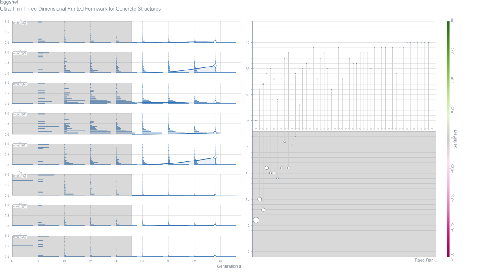
Additive Manufacturing of Cantilever: From Masonry to Concrete 3D Printing (2020-04)
Paul Carneau,
Romain Mesnil,
Nicolas Roussel,
Olivier Baverel Journal Article – Automation in Construction, Vol. 116
Abstract3d printing of cementitious material is a relatively new additive manufacturing process whose growing interest and fast development is mainly due to the digitalised manufacturing, allowing the disposition of material where it pleases. Yet, due to the properties of the fresh material and the difficulty to generate paths for the robots, the printed geometries have remained simple. In this regard, this papers longs to broaden the range of printable shapes by proposing a process-aware exploration of the 3d printing design space.
This is done by looking at historic strategies that have been developed to build cantilevers, vaults and domes in masonry - a more ancient additive manufacturing process. Similarities and main differences between the two processes are pointed out, at the scale of the component, the layer and the global structure. From that a classification of masonry strategies to build cantilevers is proposed, facilitating the identification of parameters for 3d printing that will allow to reproduce such structures. Later, some guidelines for the design of printable geometries and the generation of robotic toolpaths are given, in the light of previous findings.Metrics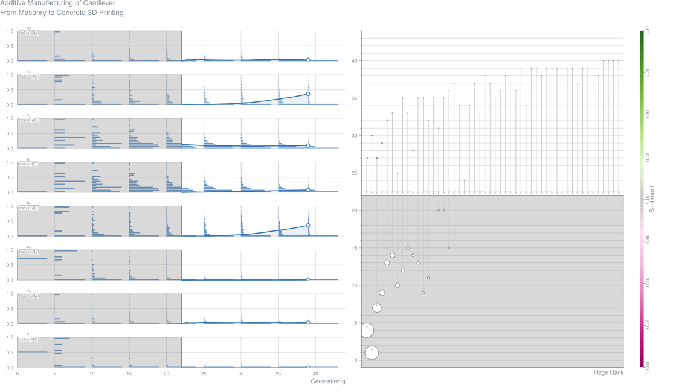
Yield-Stress and Thixotropy-Control of 3D Printed Calcium-Sulfoaluminate Cement Composites with Metakaolin Related to Structural Build-Up (2020-04)
Mingxu Chen,
Lei Yang,
Yan Zheng,
Yongbo Huang,
Laibo Li,
Piqi Zhao,
Shoude Wang,
Lingchao Lu,
Xin Cheng Journal Article – Construction and Building Materials, Vol. 252
AbstractThe three-dimensional (3D) structural build-up with the precision has proposed new requirements related to yield stress and thixotropy in the 3D-printed cementitious materials. In this study, the static and dynamic yielding behaviours of 3D-printed calcium sulfoaluminate (CSA) cement composites with metakaolin were studied to understand the relationship between thixotropy and structural build-up through the powder-based extrusion system. Experimental results show that the static yield stress implemented by the constant shear-rate-controlled protocol in the 3D-printed CSA cement paste increased significantly with rest time. Dynamic rheological behaviours were investigated by the Bingham and Herschel-Bulkley model. Given the change of flocculation structure and shear-thinning behaviour during the shear period, Herschel-Bulkley model is more suitable for studying the dynamic rheological properties of 3D-printed CSA cement paste. Moreover, the thixotropy can be well improved by the addition of metakaolin, and the correlation between the structure deformation and thixotropy of 3D-printed CSA cement paste further proved that the improved thixotropy is beneficial to 3Dprinted structural build-up. In conclusion, developing a 3D-printed CSA cement composites with the controllable yield stress and thixotropy is significant for structural build-up in the 3D-printed construction materials.Metrics
The Influence of Nano-Additives in Strengthening Mechanical Performance of 3D Printed Multi-Binder Geopolymer Composites (2020-04)
AbstractThe weak mechanical properties the 3D printed parts can limit the competence of this technology when compared to conventionally cast-in-mold cementitious composites structures. However, experimental results in this study showed that the incorporation of nano additives could improve the mechanical property of printed structures. Six geopolymeric mixtures were designed and tested for their flow-ability, shape stability, buildability and mechanical performance. Different dosage of nano graphite platelets (NGPs) ranging from 0.1% to 1%, by the weight of geopolymer, were incorporated to the best performing geopolymer. The 3D printed geopolymer with 1% of NGPs increased the flexural strength by 89% and 46% compared to the same 3D printed and casted geopolymer without any NGPs, respectively. The same increase for compressive strength was 28% and 12%. Moreover, the geopolymer mix containing 1% of NGPs demonstrated the best shape retention and buildabilityMetrics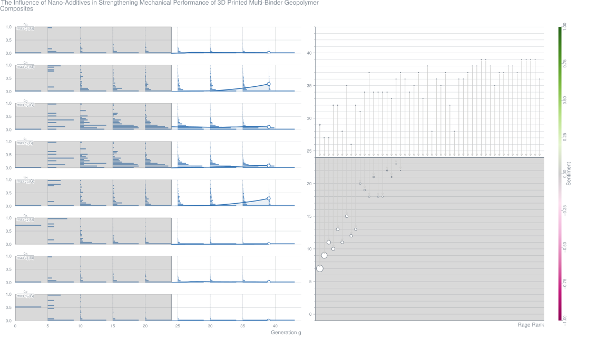
Challenges and Opportunities for Concrete in the Digital Era (2020-04)
Henri van Damme Contribution – Proceedings of the Gulf Conference on Sustainable Built Environment
AbstractUnloved by the majority and yet ubiquitous, concrete is the backbone of our modern built environment. More concrete is produced than any other synthetic material on earth. Twice as much concrete and mortar is used in construction—roughly 35 billion tons [1]—as the total of all other industrial building materials including wood [2], steel [3, 4], plastic [5], and aluminum [6]. Roads, bridges, tunnels, dams, power plants, ports, airports, dikes and seawalls, waste- and freshwater plants and networks—all these infrastructures rely on the extensive use of concrete, just like schools, hospitals, and public and commercial buildings. There seems to be no other currently known material available in the quantities required to meet the global demand for building and infrastructure. Although the word concrete is a generic term that applies to any granular composite to which cohesion is provided thanks to a binding phase—bitumen, clay, epoxy, lime, etc.—modern concrete relies almost exclusively on the use of Portland cement or its variants. Not surprisingly considering the success of concrete, the global demand for cement has seen an unprecedented growth in the last half-century, especially since the turn of the third millennium (Fig. 1). In relative terms, the increase of cement demand is surpassed by that of plastic [10] (Fig. 1), but in absolute terms, cement remains by far the largest industrially manufactured product. There is a wide consensus that this exceptional growth of cement and concrete consumption on the global scale is temporary and due to a handful of actors only among the emerging countries, China in particular [7, 8]. But there are also good reasons to consider that a slower but lasting growth will go on for long. Developed countries face the challenge of maintaining and upgrading their extensive but aging transport, power, water, and telecommunication networks, whereas many developing countries still dedicate a large fraction of their national income to satisfy basic human development needs like access to water, sanitation, electricity, and affordable housing. Altogether, this is likely to drive a lasting increase of concrete demand for decades to come.Metrics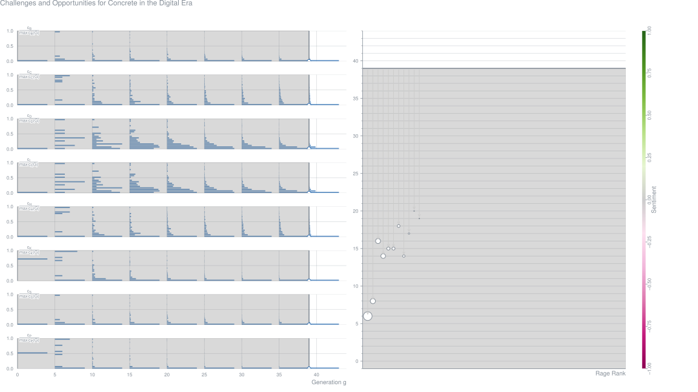
Additive Manufacturing of Anisotropic Concrete: A Flow-Based Pultrusion of Continuous Fibers in a Cementitious Matrix (2020-04)
AbstractFFor the tens past years, important development has been achieved on the adaptation of additive manufacturing to the construction industry using or the tens past years, important development has been achieved on the adaptation of additive manufacturing to the construction industry using cconcrete. They mostly concerns control rheology at fresh state, setting time, and technology advances. Nevertheless, the reinforcement of 3D oncrete. They mostly concerns control rheology at fresh state, setting time, and technology advances. Nevertheless, the reinforcement of 3D pprinted part remains an open question. Different reinforcement protocols have been proposed in the literature, often based on traditional way of rinted part remains an open question. Different reinforcement protocols have been proposed in the literature, often based on traditional way of reinforcement. In this context, the aim of this paper is to present an alternative way to reinforce extruded concrete or other pasty materials inspired reinforcement. In this context, the aim of this paper is to present an alternative way to reinforce extruded concrete or other pasty materials inspired by the composite industry. The present patented manufacturing methodology is based on extrusion-based additive manufacturing, inspired by by the composite industry. The present patented manufacturing methodology is based on extrusion-based additive manufacturing, inspired by pultrusion and co-extrusion process of polymer composites, but taking full advantage of the specific rheological behaviour of cementitious matrix. pultrusion and co-extrusion process of polymer composites, but taking full advantage of the specific rheological behaviour of cementitious matrix. It consists in the continuous addition of numerous continuous yarn in the extruded mortar before the final extrusion. A comparison between those It consists in the continuous addition of numerous continuous yarn in the extruded mortar before the final extrusion. A comparison between those pprocesses is made. Depending on the number of yarns and their sizes, this process is showed to provide ductility for limited amount of rocesses is made. Depending on the number of yarns and their sizes, this process is showed to provide ductility for limited amount of rreinforcement and have the potential to be an alternative to passive rebar traditionally used in concrete by providing a true reinforcement in einforcement and have the potential to be an alternative to passive rebar traditionally used in concrete by providing a true reinforcement in traction to the structure for larger number of yarns, changing extruded concrete in unidirectional composite with brittle matrix. Using appropriate traction to the structure for larger number of yarns, changing extruded concrete in unidirectional composite with brittle matrix. Using appropriate matrix formulation, the mastering of its yield stress during the extrusion is showed to be the most important process parameters. matrix formulation, the mastering of its yield stress during the extrusion is showed to be the most important process parameters.Metrics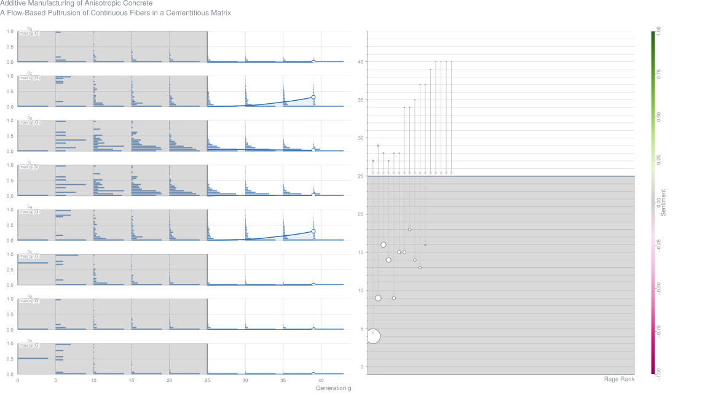
3D Printable Lightweight Foamed Concrete and Comparison with Classical Foamed Concrete in Terms of Fresh State Properties and Mechanical Strength (2020-04)
AbstractThis paper presents a novel type of foamed concrete that is termed ‘‘3D-printable lightweight foamed concrete” (3DP-LWFC). Unlike classical lightweight foamed concrete (C-LWFC), this novel material is able to keep its shape at the fresh state due to enhanced consistency and viscosity. This peculiarity lends itself to being implemented in automated extrusion production process and 3D printing applications without the use of formwork, which is particularly convenient in the building industry. These unique fresh state properties of 3DP-LWFC are demonstrated through a specific extrusion test conceived and used in this experimental campaign, and highlighted by comparison with results related to C-LWFC. Despite the remarkably different behavior of the novel material at the fresh state, the mechanical strength of 3DP-LWFC is even slightly higher than C-LWFC. This is demonstrated through a wide experimental campaign focused on the compressive and flexural strength of 3DP-LWFC, which includes different dry densities, curing conditions, cement types, water/cement ratios. Additionally, the effect of the mixing conditions on the mechanical strength of 3DP-LWFC, in particular the rotational speed of the mixer during the preparation of the paste, is also analyzed and discussed. It is found that the increase of mixing intensity from 1200 rpm to 3000 rpm resulted in a considerable increase of mechanical strength values of 3DP-LWFC, up to more than 70% for the compressive strength and up to around 100% for the flexural strength.Metrics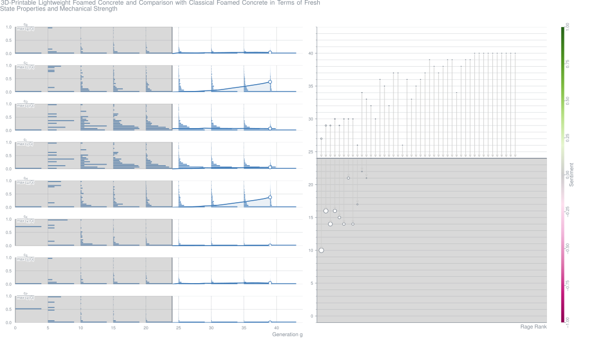
AbstractExperimentation with 3D-printed concrete in architecture has flourished over the past decade and, consequently, so too has the development of industrial-grade manufacturing processes. 3D printing is part of a wave of robotic construction technologies developed with the ‘digital turn’ in architecture (Carpo, 2012) and, with it, the exploration of the possibilities offered by digital fabrication tools (Gramazio et al., 2015). Robotic technologies for construction sites have been designed since since the mid-20th century, but essentially consisted in the beginning of specialised machines accomplishing a single, repetitive task. Recent research has focused on more versatile machines, such as six-axis robotic arms, to perform a great diversity of tasks. This new approach to robotic construction processes, as well as the ‘digital and informational turn’ accompanying it, makes way for a potentially drastic renewal of the construction industry and its methods. The introduction of these new robotic manufacturing technologies into the construction industry is still in the early stages, with numerous challenges needing to be overcome to reach full integration. These challenges must be studied in light of the potentialities of concrete 3D printing and other robotic fabrication processes, to ensure implementation in the construction industry in the most relevant way. This paper gives a brief analysis of the current advancement of concrete 3D-printing technologies and the challenges facing researchers and companies, alongside three case studies of applications of concrete 3D printing developed by XtreeE. These applications have been developed in partnership with various significant players in the French construction industry, and have led to the manufacturing of several products as part of completed construction projects. Given the practical dimension of these case studies, they provide complementary information to academic research that can be used for further reflection on the industrialisation of such technologies.Metrics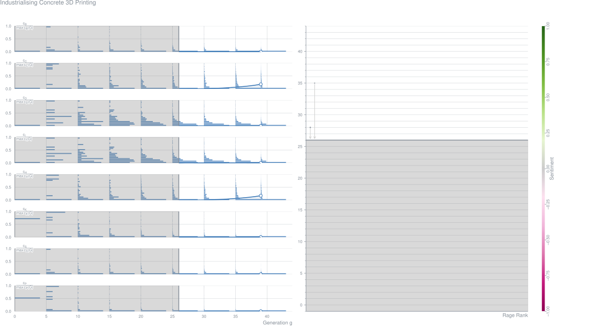
Automation in the Construction of a 3D Printed Concrete Wall with the Use of a Lintel Gripper (2020-04)
AbstractDevelopments in the automation of construction processes, observable in recent years, is focused on speeding up the construction of buildings and structures. Additive manufacturing using concrete mixes are among the most promising technologies in this respect. 3D concrete printing allows the building up of structure by extruding a mix layer by layer. However, the mix initially has low capacity to transfer loads, which can be particularly troublesome in cases of external components that need to be placed on top such as precast lintels or floor beams. This article describes the application of additive manufacturing technology in the fabrication of a building wall model, in which the door opening was finished with automatic lintel installation. The research adjusts the wall design and printing process, accounting for the rheological and mechanical properties of the fresh concrete, as well as design requirements of Eurocode. The article demonstrates that the process can be planned precisely and how the growth of stress in fresh concrete can be simulated, against the strength level developed. The conclusions drawn from this research will be of use in designing larger civil structures. Furthermore, the adverse effects of concrete shrinkage on structures is also presented, together with appropriate methods of control.Metrics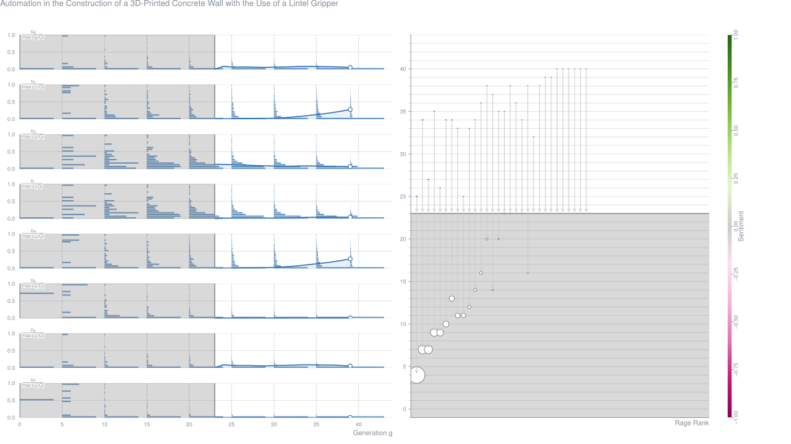
The Viability and Simplicity of 3D Printed Construction: A Military Case Study (2020-04)
AbstractIn November 2019, U.S. Marines, Air Force, and Army Corps of Engineers personnel demonstrated the viability and simplicity of three-dimensionally (3D)-printed construction in a controlled environment at the U.S. Army Engineer Research and Development Center—Construction Engineering Research Laboratory in Champaign, Illinois. The tri-service exercise spanned three days and culminated in the construction of three 1 m × 1 m × 1 m (3 ft × 3 ft × 3 ft) concrete dragon’s teeth (square pyramid military fortifications used to defend against tanks and armored vehicles) and several custom-designed objects. The structural components were printed using a custom-built, gantry-style printer called ACES Lite 2 and a commercially available, proprietary mortar mix. This paper examines the viability of using 3D-printed construction in remote, isolated, and expeditionary environments by considering the benefits and challenges associated with the printing materials, structural design, process efficiency, labor demands, logistical considerations, environmental impact, and project cost. Based on the results of this exercise, 3D-printed construction was found to be faster, safer, less labor-intensive, and more structurally efficient than conventional construction methods: the dragon’s teeth were printed in an average of 57 min each and required only two laborers. However, the use of commercially procured, pre-mixed materials introduced additional cost, logistical burden, and adverse environmental impact as compared to traditional, on-site concrete mixing and production. Finally, this paper suggests future applications and areas of further research for 3D-printed construction.Metrics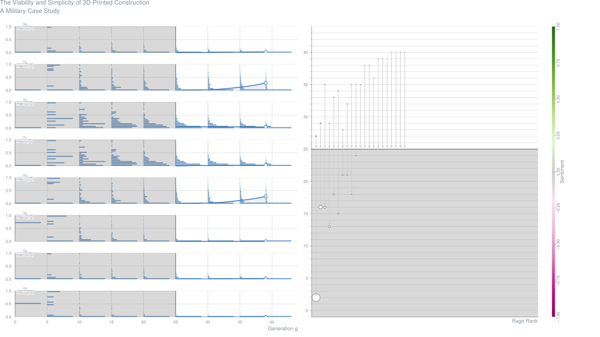
Mix Suitable for Concrete 3D Printing: A Review (2020-04)
Mohd Khan Journal Article – Materials Today: Proceedings, Vol. 32, pp. 831-837
AbstractThe potential application of 3D printing technology is envisioned to create a third industrial revolution creating disruption in the economy, providing personalization and adaptation of the design. The construction field is quickly catching up with this new technology using the aid of a concrete 3D printer, the development of which is aimed at providing safer working conditions, economy and architectural freedom. The process of extrusion-based concrete printing requires the printable mix to flow through the distribution network and be deposited layer-by-layer on the build substrate or directly on-site analogous to the ink-jet printing process. In this case, for the mix to be printable, it should be capable of being pumped, extruded and deposited in layers within an optimized duration of time. The printing time-gap between layers is complicated by the scale and complexity of the geometry. The rheological behavior of the fresh mix will have a significant influence on the ability of the mix to be pumped and extruded while the mechanical response of the fresh concrete will influence the ability of the concrete printer to build layers with bonded interfaces. The design mixes are formulated to provide the maximum compressive and tensile strengths to the printed specimen which are influenced by the print parameters like time gap between layers, size of the nozzle in relation to the aggregate size. This paper aims at reviewing the concrete-mixes including fiber-reinforced, Geopolymer mixes suitable for the 3D printing process looking at both the fresh and hardened properties of the mix while simultaneously shedding light on appropriate printing parameters. The strategies used by researchers, in selecting appropriate material mix to tune the fresh properties of concrete and to improve the interfacial bond strength are discussed. Recommendations are provided to improveMetrics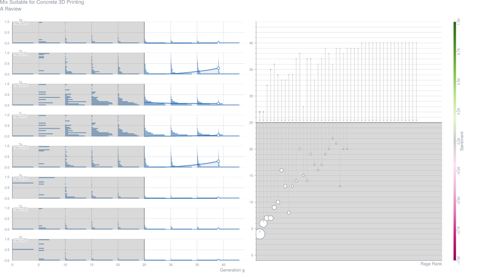
3D Printing of Concrete: Beyond Horizons (2020-04)
Abstract3-D printing is a disruptive technology that can have enormous social and economic impacts in years to come. The technology, which took shape in the 1980's and was initially limited to manufacturing small products, is moving to large scale construction applications, utilizing concrete and other cementitious and binder materials. This paper presents a state-of-the-art and state-of-the-practice of 3-D printing of concrete including a historical background and advances in equipment, materials, and computer modeling. Some demonstration projects are presented and opportunities and challenges associated with 3-D printing of concrete are identified. Formulation of ink utilizing local and in-situ materials is a major challenge and will continue to develop. Developments will also continue on large scale construction 3-D printers. The paper should be of value to both the seasoned researchers and beginners in 3-D printing, and also to those working on transitioning 3-D printing in construction from research to practice.Metrics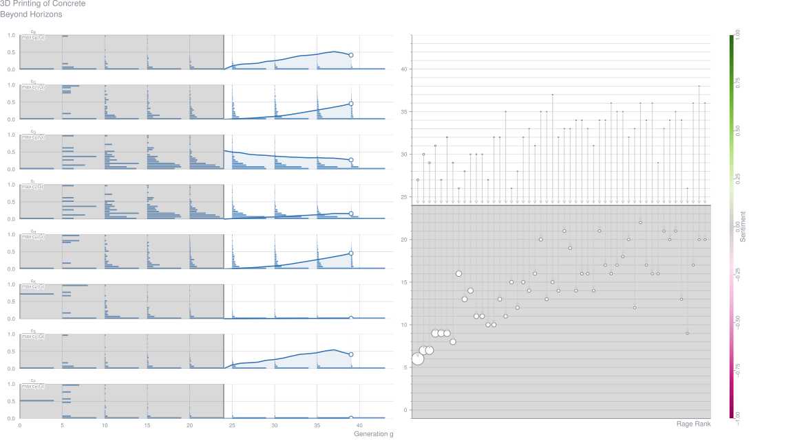
A Rheology-Based Quasi-Static Shape-Retention-Model for Digitally Fabricated Concrete (2020-04)
AbstractThe shape retention capability of an extruded filament is of cardinal importance for quality 3D printed concrete elements. Not only is it a prerequisite for surface aesthetics, but it also contributes towards buildability. Optimisation of filament layer height allows for construction time and cost saving possibilities. This research develops the theoretical framework for an analytical shape retention model that predicts the maximum stable filament layer height at which no plastic yielding occurs, based only on the rheology of a material. The Mohr-Coulomb failure criterion is employed and the model simplified by conservatively negating the effect of interparticle friction. A model is also developed that determines whether sufficient friction is present to induce confinement within a filament layer. An experimental verification process via filament extrusion confirms the applicability of the model. A 6.7% difference in stable filament layer height is obtained by comparison with a finite element analysis, proffering as numerical verification for the model.Metrics
On the Emergence of 3D Printable Engineered, Strain-Hardening Cementitious Composites (2020-04)
AbstractWhile interest in 3D printing of concrete (3DCP) and structures has been growing, a major obstacle for implementation of 3DP construction method is the need for steel reinforcement and the challenges this presents to the 3DP process. Engineered Cementitious Composites (ECC), also known as Strain-hardening Cement-based Composites (SHCC), hold promise to attain structural integrity, durability, reliability and robustness without steel reinforcement. This article surveys the state of the art on 3DP research with ECC and suggests needed research to direct future development. Research in Asia, Europe and the United States has demonstrated printability and buildability of 3DP-ECC that exhibits characteristic tensile ductility of cast ECC. Nonetheless, a number of outstanding research areas are identified, including those associated with more sustainable mixdesign, rheology control, microstructure, filament/filament interface weakness, and long-term durability. Resolution of these challenges will better position the research community to addressing full scale construction, print speed, and print quality.
Rotation-Nozzle and Numerical Simulation of Mass-Distribution at Corners in 3D Cementitious Material-Printing (2020-04)
AbstractWhen conducting corner printing with rotational rectangular nozzle, a greater amount of material is deposited inside the filament and hence tearing and skewing will occur on the surface of the printed filament. With the aim of maintaining the surface finish and mechanical properties of the printed filament, a 3D numerical model is developed to study the flow mechanism at a corner under various conditions during the extrusion and deposition processes with rotational nozzle. After experimental validation, the numerical model is employed to study the material flow mechanism under various conditions. The results indicate that the rheological properties have little effect on the mass distribution ratio. However, a high relative nozzle travel speed, larger corner radii and lower nozzle aspect ratio is a promising route in obtaining a uniform material distribution ratio. The interlinking of process parameters affects the material distribution ratio significantly as well. Furthermore, the importance of the factors that affect the mass distribution was determined quantitatively.Metrics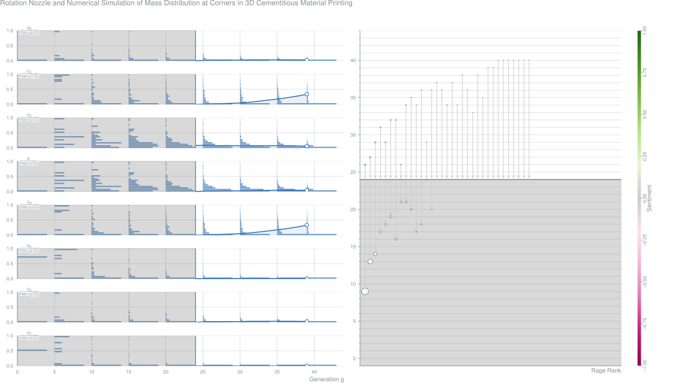
Opportunities and Challenges for Structural Engineering of Digitally Fabricated Concrete (2020-04)
AbstractDigital fabrication technologies utilizing concrete (DFC) have recently enabled form freedom for the production of a variety of concrete-made objects having mainly architectural and aesthetic functions. Structural elements or civil/building structures made by DFC demonstrate a high engineering potential, mainly for tailoring the final shape while optimising the structural/functional performance, material use, overall costs, and architectural effectiveness. However, the design of structurally efficient DFC constructions or components is often faced with a lack of a common structural engineering approach that can adapt to specific DFC particularities. In this paper, we provide a systematic overview of a number of DFC structural projects developed thus far. A comprehensive discussion about structural engineering details is provided, addressing the related fundamental structural issues and envisioning opportunities and challenges toward achieving the full potential of DFC.Metrics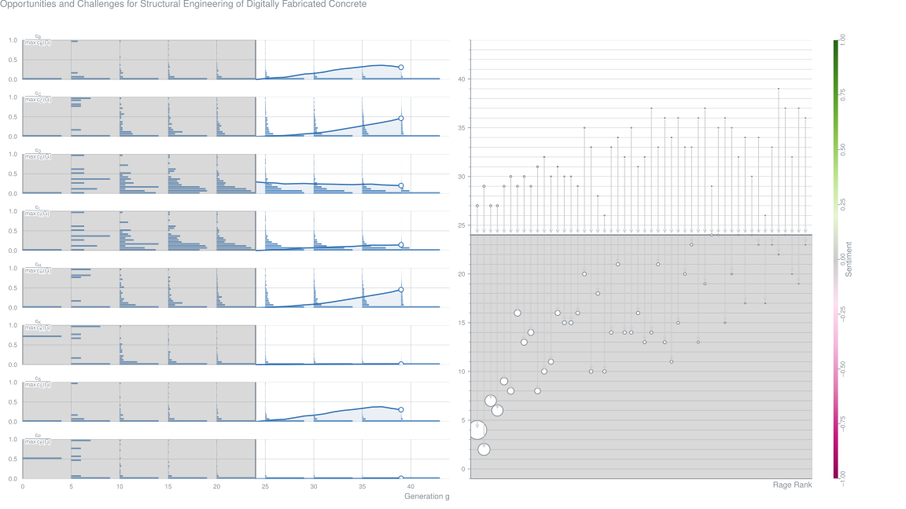
Steel-Fiber-Reinforced 3D Printed Concrete: Influence of Fiber Sizes on Mechanical Performance (2020-04)
Luong Pham,
Jonathan Tran,
Jay Sanjayan Journal Article – Construction and Building Materials, Vol. 250
AbstractMechanical properties of high-performance printing concrete reinforced with steel fibres with different lengths (3 and 6 mm) at different fibre volume contents (0.25%, 0.5%, 0.75% and 1%) are investigated. The experimental results substantiate that critical length and volume fraction of fibres, particularly 0.75% and 1% steel fibres of 6 mm length, in conjunction with fibre alignment, are of major importance for generating fibre bridging mechanism to improve flexural performance. As a result, enhanced loadcarrying capacity, deflection hardening behaviour and less brittle failure can be achieved in printed specimens tested in a specific direction. Compressive and flexural strengths of printed concrete are in a range of 70-111 MPa and 6–15 MPa compared with the cast control of 90–113 MPa and 11–14 MPa, respectively. Results from micro-computed tomography scanning on hardened concrete without fibres reveal that the high-quality printed concrete has lower pore content, which is 8.8% compared with 9.8% and 11.4% in the cast and low-quality printed samples, respectively. It also shows that more than 90% of extruded fibres align within 0°-30° from the filament orientation.Metrics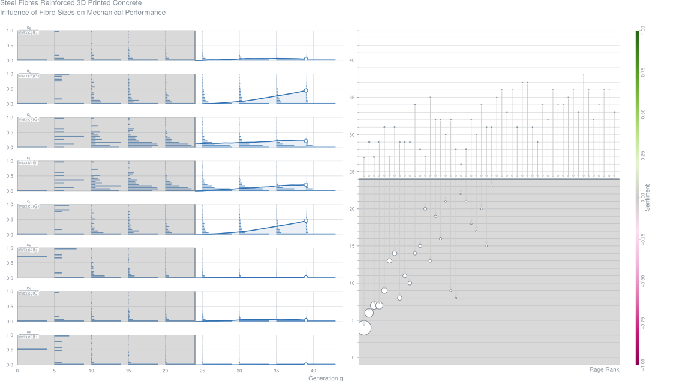
Mastering Yield-Stress-Evolution and Formwork-Friction for Smart Dynamic Casting (2020-04)
AbstractThe construction industry is a slow adopter of new technologies and materials. However, interdisciplinary research efforts in digital fabrication methods with concrete aim to make a real impact on the way we build by showing faster production, higher quality and enlarged freedom of design. In this paper, the potential and constraints of a specific digital slip-forming process, smart dynamic casting (SDC), are investigated with a material-focused approach in the complex task of producing thin folded structures. Firstly, the workability and the strength evolution of different material compositions are studied to achieve the constant processing rate for SDC. Secondly, friction between the formwork walls and the concrete, a key aspect in slip-casting, is studied with a simplified experimental setup to identify if any of these mixes would provide an advantage for processing. Finally, a theoretical framework is constructed to link the material properties, the process conditions and the designed geometry. This framework introduces the 'SDC number' as a simplified approach to formulate the process window, the suitable conditions for slip-forming. The experimental results prove the assumption of the model that friction is proportional to yield stress for all base compositions and acceleration methods regardless of the filling history. The results are evaluated in the context of the narrow process window of thin folded structures as well as the wider process window of columns. The necessity of consistent strength evolution is underlined for narrow windows. Further, friction is shown to be the highest initially, thus with both narrow and wide process windows, after a successful start-up the continuation of slipping is less prone to failure. The proposed theoretical model could provide material and geometry-specific slipping strategy for start time and slipping rate during production.Metrics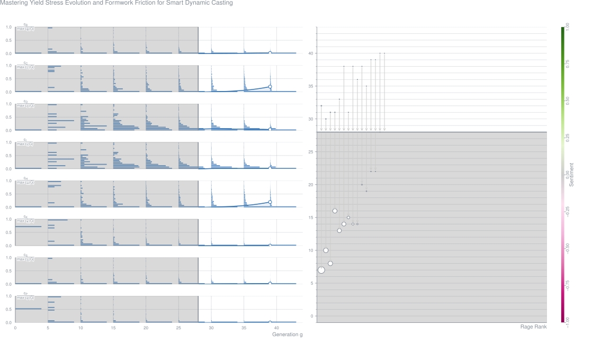
Cementitious Cellular Composites with Auxetic Behavior (2020-04)
AbstractAuxetic behavior refers to material with negative Poisson’s ratio. In this research, a new type of cementitious auxetic material is developed. A novel crack bridging auxetic mechanism is discovered which is in contrast with a local buckling mechanism commonly employed to trigger auxetic behavior. Taking advantage of 3D printing techniques, cementitious cellular composite (CCC) specimens with auxetic cellular structures were produced. Meanwhile, cementitious materials with different fiber content were used as constituent material. Uniaxial compression and cyclic loading tests were performed on the CCCs. Experiments show that with proper constituent material, CCCs can exhibit auxetic behavior which is induced by crack bridging process of the cementitious constituent material. In addition, strain hardening behavior can be identified in the stress-strain curve under uniaxial compression and consequently high specific energy absorption is obtained. Furthermore, 2.5% of reversible deformation which is significantly higher than conventional cementitious materials under cyclic loading is obtained within 25,000 cycles. Obvious fatigue damage is observed in the first 3000 cycles, afterwards signs of mechanical properties recovering can be found. The discovered auxetic mechanism indicates a new designing direction for brittle materials to achieve auxetic behaviors.Metrics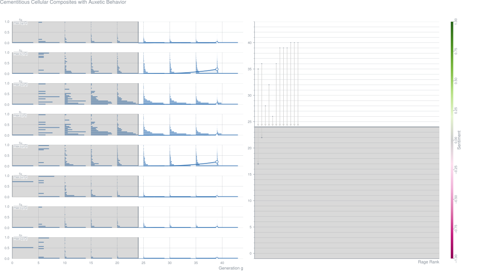